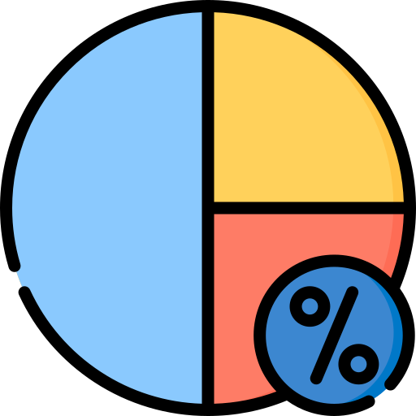
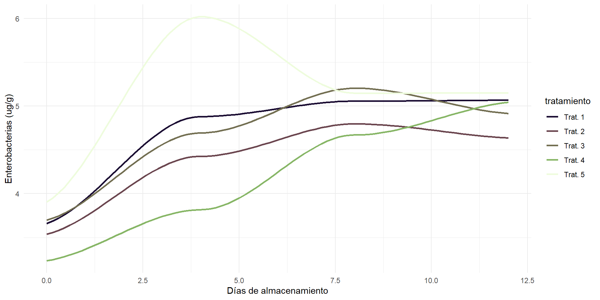
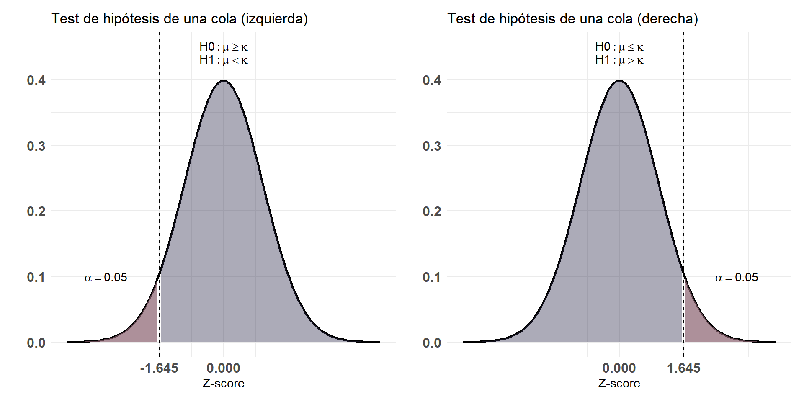

Presentación
INFERENCIA ESTADÍSTICA
Docente: Dra. Tamara Ricardo
Curso de Epidemiología: Nivel Intermedio

OBJETIVOS
Situar a la disciplina estadística en el campo de la epidemiología.
Describir nociones básicas de la estadística inferencial de importancia epidemiológica:
Estimación de parámetros poblacionales.
Contrastes de hipótesis.
INTRODUCCIÓN
Cuando trabajamos en Epidemiología suele ser necesario investigar:
Cuál es la frecuencia de una enfermedad o evento de salud.
Su distribución en una población (lugar y tiempo).
Cuáles son los determinantes del evento observado.
Para lograrlo, deben incorporarse conceptos y métodos de la bioestadística.
- En la actualidad, podemos dividir la bioestadística en dos ramas:
ESTADÍSTICA DESCRIPTIVA
Estadística descriptiva
Tomando como base a la tríada tiempo-espacio-persona intenta detectar y caracterizar:
¿Qué población o subgrupos desarrollan la enfermedad o evento de salud?
¿Quienes lo hacen con mayor frecuencia?
¿Cómo varía la frecuencia del evento a lo largo del tiempo y/o en poblaciones con diferentes características?
¿En qué áreas geográficas es más o menos frecuente dicho evento?
- Estadístico: Medición numérica que describe algunas características de una muestra.
- Parámetro: Medición numérica que describe algunas características de una población.
Ejemplo: Queremos estimar la frecuencia de anticuerpos anti Leptospira spp. en perros domiciliados de la ciudad de Santa Fe, Argentina.
Población: Todos los perros domiciliados residentes en la ciudad de Santa Fe, Argentina.
Muestra: Perros domiciliados que acuden a la campañas municipales de castración y vacunación antirrábica.
Datos o variables: Características del animal (sexo, edad, condición corporal), hábitos, exposición a fuentes ambientales, contacto con animales infectados, presencia de anticuerpos anti-Leptospira, etc.
Estadísticos: media, varianza, desviación estándar.
Parámetros: media poblacional, varianza poblacional, desviación estándar poblacional.
¿A qué llamamos variables?
- Todos los aspectos del ambiente que nos rodea pueden considerarse como datos o variables y presentan distintas características, valores y escalas de medición.
Ejemplos de variables


íconos por Freepik
Ejemplos de variables


íconos por Freepik
Ejemplos de variables

íconos por Freepik
Medidas de frecuencia

Proporción
Frecuencia con la que ocurre un evento en una población.
Se expresa en porcentajes (%).
Ejemplos: prevalencia, mortalidad, letalidad.
íconos por Freepik
\[ \frac{a/b}{c/d} \]
Razón
Relación aritmética entre dos eventos en una misma población o el mismo evento en dos poblaciones.
Se calcula dividiendo el evento A por el evento B.
Se expresa en magnitudes.
Ejemplos: odds-ratio, riesgo relativo.
Tasa
Magnitud de cambio de una variable por unidad de tiempo en relación al tamaño de la población expuesta.
Se expresa en potencias de 10.
Ejemplos: tasa de incidencia.
íconos por Freepik
Medidas de tendencia central
Media aritmética
Está dada por la suma de los valores de una variable, dividida por el número total de observaciones.
La media poblacional se calcula como:
\[ \mu = \frac{\sum^N_{i=1} x_i}{N} \]
Mientras que la media muestral está dada por:
\[ \bar{x} = \frac{\sum^n_{i=1} x_i}{n} \]
íconos por Freepik
Mediana (Me)
Corresponde al centro de la distribución en una variable con datos ordenados.
Si el número de observaciones es par, la mediana es el promedio de los dos valores centrales.
Se calcula como:
\[ pos(Me) = \frac{n+1}{2} \]
Moda
- Valor o valores que aparecen con mayor frecuencia en un conjunto de datos.
Sesgo
Desviación sistemática que ocurre en una estimación o en los resultados de un estudio, en relación con el verdadero valor o parámetro poblacional.
Los datos están sesgados cuando se distribuyen de forma asimétrica hacia uno de los lados.
El sesgo en los resultados estadísticos puede llevar a:
Conclusiones incorrectas sobre relaciones causales.
Subestimación o sobreestimación de un efecto o resultado.
Falta de generalización de los resultados a la población total.
Puede detectarse comparando la media, la mediana y la moda.
Distribución sesgada a la izquierda
- La media y mediana están a la izquierda de la moda.
Distribución sesgada a la derecha
- La media y mediana están a la derecha de la moda.
Distribución simétrica
- La media y mediana son iguales que la moda.
Medidas de dispersión
Desvío estándar
Diferencia entre valor observado de una variable y su media.
El desvío estándar poblacional se calcula como:
\[ \sigma = \sqrt{\frac{\sum(x_i -\mu)^2}{N}} \]
Mientras que el desvío muestral se calcula como:
\[ S = \sqrt{\frac{\sum(x_i -\bar{x})^2}{n-1}} \]
Varianza
Promedio de los cuadrados de las distancias de los valores de una variable con respecto a su media.
Se ve muy influida por la presencia valores extremos.
Se calcula elevando al cuadrado el desvío estándar.
Error estándar (SE)
Representa en qué medida podrían variar las medias de todas las posibles muestras escogidas de una población.
Se calcula como:
\[ SE = \frac{S}{\sqrt n} \]
Rango intercuartil
Espectro en el que se encuentra la mediana de los datos.
Se calcula como la diferencia entre los cuartiles del 25% (Q1) y 75% (Q3).
Análisis exploratorio de datos
Proceso inicial de análisis de un conjunto de datos fundamental en investigación cuantitativa para obtener una comprensión general de la estructura de los datos.
Tiene como objetivos:
Conocer la estructura y contenido de los datos
Identificar patrones y tendencias generales
Detectar valores atípicos y/o datos faltantes
Verificar suposiciones estadísticas
Tipos de análisis exploratorio
Univariado:
Estadísticos descriptivos:
medidas de tendencia central,
medidas de dispersión.
Gráficos:
histogramas,
gráficos de cajas (boxplots),
gráficos de violín.
Histograma

Boxplot

Gráfico de violín
Bivariado:
Correlación.
Tablas de contingencia.
Gráficos:
scatterplots,
correlogramas,
gráficos de barras,
gráficos de líneas.
Multivariado:
Análisis de componentes principales (PCA).
Gráficos de pares, gráficos de calor (heatmaps).Gráfico de barras
Scatterplot

Correlograma
Gráfico de barras
Gráfico de líneas
ESTADÍSTICA INFERENCIAL
Estadística inferencial
Intenta llegar a generalizaciones acerca de una población según resultados obtenidos a partir de una muestra extraída de la misma.
Es decir, a partir de los datos de la muestra se calcula algún estadístico que permita aproximar un parámetro poblacional.
Población y muestra
En ciertos casos, como ser los censos, la población muestreada es la misma que la población objetivo y pueden hacerse inferencias directas.
Lo más común es que esto no ocurra y haya que obtener una muestra representativa de la población de estudio empleando procesos de aleatorización.
Algunos conceptos básicos
Variable aleatoria:
- Es aquella que tiene un solo valor numérico determinado por el azar, para cada resultado de un procedimiento.
Grados de libertad:
- Número de observaciones muestrales que son libres de variar después de haber impuesto ciertas restricciones a todos los valores de los datos.
Distribución de probabilidad:
- Distribución que indica la probabilidad de cada valor de la variable aleatoria.
Distribución muestral
Distribución de todos los valores posibles que puede asumir un estadístico, calculados a partir de muestras del mismo tamaño, seleccionadas aleatoriamente de la misma población.
Para que una distribución sea simétrica, el 95% de los datos deben estar a ±2 desviaciones estándar del valor de la media.

- 68% de los datos está dentro de 1 desvío estándar de \(\bar{x}\).
- 95% de los datos está dentro de 2 desvíos estándar de \(\bar{x}\).
- 99% de los datos está dentro de 3 desvíos estándar de \(\bar{x}\).
Distribuciones continuas
Distribuciones de probabilidad más utilizadas para datos continuos:
Distribución normal estándar o gaussiana.
Distribución Chi-cuadrado.
Distribución t de Student.
Distribución normal estándar (\(Z\))
Definida por dos parámetros:
Media poblacional \(\to \mu = 0\)
Varianza poblacional \(\to \sigma = 1\)
La gráfica de la distribución es simétrica y tiene forma de campana.
El área bajo la curva de densidad es igual a 1.
Distribución normal estándar (\(Z\))

Distribución t de Student (\(t\))
Definida por dos parámetros:
Media poblacional \(\to \mu = 0\)
Varianza poblacional \(\to \sigma > 1\)
Tiene forma de campana pero refleja mayor variabilidad en muestras pequeñas.
A medida que aumenta el tamaño muestral se aproxima a la normal.
Distribución t de Student (\(t\))

Decisión entre \(Z\) y \(t\)
Distribución Chi-cuadrado (\(\chi^2\))
Solo puede tomar valores de cero o positivos.
Es sesgada y asimétrica.
Se acerca a la simetría a medida que aumentan los grados de libertad.
Es diferente para cada número de grados de libertad.
Distribución Chi-cuadrado (\(\chi^2\))
Estimación de parámetros
Al momento de interpretar los resultados de un estudio, lo hacemos mediante los valores que obtuvimos de nuestra muestra (estimador puntual).
Si se repitiera el estudio con una muestra diferente, nuestro estimador puntual podría variar.
Intervalo de confianza
Rango de valores, normalmente distribuidos, en el cual se encuentra el valor real de un estimador para la población.
Describe la variabilidad que existe entre los resultados obtenidos de un estudio y la medida real en la población objetivo.
Por consenso, se utiliza un nivel de confianza del 95%:
\[ 95\% IC = (\bar{x} -1.96 SE, \bar{x} + 1.96 SE) \]
Donde:
\(\bar{x}\) es el estimador puntual
\(SE\) es el error estándar
Nivel de confianza (\(1-\alpha\))
Probabilidad a priori de que el IC a calcular contenga al verdadero valor del parámetro.
A mayor nivel de confianza, más estrecho será el intervalo de confianza (IC) y mayor el tamaño de muestra requerido.
Si bien existen ICs del 90% o 99%, el 95% de confianza representa un equilibrio entre el ancho del intervalo (precisión) y el tamaño muestral.
Ejemplo
Datos muestrales de 280 ensayos de terapias alternativas; en el 44% de ellos se registró éxito terapéutico (95% IC: 38,1, 49,7%).
Interpretación:
Tenemos una confianza del 95% de que el intervalo de 38,1% a 49,7% realmente contiene el valor verdadero.
Si seleccionamos muchas muestras diferentes de tamaño 280 y construimos los IC, el 95% de ellos incluirían el valor de la proporción poblacional.
Tests de hipótesis
Procedimiento estándar para probar una afirmación acerca de una propiedad de la población.
Se diferencian dos tipos de hipótesis:
Hipótesis de investigación: Supuesto o conjetura que motiva la investigación.
Hipótesis estadística: afirmación acerca de una o más propiedades de la población objetivo.
Regla del suceso infrecuente
Si, bajo un supuesto dado, la probabilidad de un suceso observado particular es excepcionalmente pequeña, concluimos que el supuesto probablemente es incorrecto.
Sirve para diferenciar entre resultados que pueden ocurrir por azar y aquellos que es altamente improbable que ocurran por azar.
Tipos de hipótesis estadística
Hipótesis nula (\(H_0\)):
Postula que el valor de un parámetro poblacional es igual a un valor aseverado y no existen diferencias entre los grupos que queremos comparar.
Se rechaza o acepta en forma directa.
Hipótesis alternativa (\(H_1\)):
Postula que existen diferencias entre los grupos que queremos comparar.
No se acepta o rechaza directamente sino a través de \(H_0\).
Fuente: Triola (2009). Estadística. Pearson Educación de México. 914 pp.
Estadístico de prueba
Valor que se utiliza para tomar la decisión sobre la hipótesis nula.
Se calcula convirtiendo al estadístico muestral en una puntuación (como z, t o ꭕ2), bajo el supuesto de que la hipótesis nula es verdadera.
Existen distintos estadísticos de prueba según comparemos proporciones, medias o desvíos estándar.
| Proporciones | \[ Z = \frac{\bar{p}-p}{\sqrt(pq)-n} \] | |
| Medias | \[ Z = \frac{\bar{x}-\mu}{\sigma/\sqrt{n}} \] | \[ t = p - \frac{\bar x- \mu}{s/ \sqrt(n)} \] |
| Desvíos estándar | \[ \chi^2 = \frac{(n - 1)s^2}{\sigma^2} \] |
Valor crítico
Se conoce como región crítica o región de rechazo al conjunto de valores del estadístico de prueba que pueden llevar a rechazar \(H_0\).
El nivel de significancia (\(\alpha\)) es la probabilidad de que el estadístico de prueba caiga en la región crítica cuando \(H_0\) es verdadera (Error tipo I).
El valor crítico es aquel que separa la región crítica de los valores que no rechazan la \(H_0\).
Test de hipótesis de dos colas
Test de hipótesis de una cola
p-valor
Mínimo valor de significancia (\(\alpha\)) por el cual \(H_0\) se puede rechazar.
Regla de decisión:
Se rechaza \(H_0\):
\(p \leq \alpha\)
No se rechaza \(H_0\):
\(p > \alpha\)
Potencia estadística
Es la probabilidad de rechazar una \(H_0\) falsa o de aceptar \(H_1\) cuando es verdadera.
Se calcula como 1 - la probabilidad de aceptar la \(H_0\) cuando es falsa (error tipo II o \(\beta\)).
Es directamente proporcional al tamaño muestral e inversamente proporcional a la varianza de las observaciones individuales.
En resumen…
| \(H_0\) es verdadera | \(H_0\) es falsa | |
| Rechazo \(H_0\) | Error tipo I (\(\alpha\)) | Decisión correcta (\(1-\alpha\)) |
| No rechazo \(H_0\) | Decisión correcta (\(1-\beta\)) | Error tipo II (\(\beta\)) |
Etapas de la investigación estadística